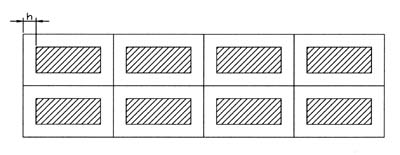
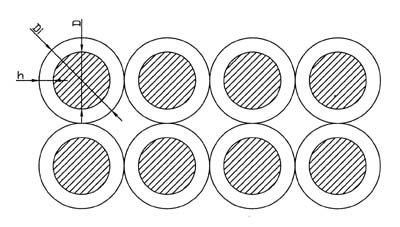
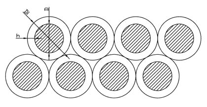
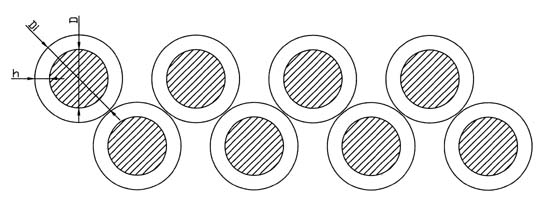

Расчет фактора упаковки при намотке соленоидов
Фактор упаковки - отношение суммарной площади проводников в поперечном сечении соленоида без учета изоляции к площади поперечного сечения соленоида.
Обозначения:
Lambda - фактор упаковки
D - диаметр круглого провода без изоляции
Di - диаметр круглого провода в изоляции
S - площадь поперечного сечения провода или шины без изоляции
Si - площадь поперечного сечения провода или шины в изоляции
h - толщина слоя изоляции
1. Намотка шиной прямоугольного сечения виток к витку

Lambda = S/Si
Например, для шины S = 5 х 2 мм2 (по меди) с толщиной изоляции h = 0.15 мм:
S = 5 ∙ 2 = 10 мм2
Si = (5 + 2 ∙
0.15) ∙ (2 + 2
∙ 0.15) = 12.19 мм2
Lambda = S/Si = 10/12.19 ~ 0.82
2. Намотка круглым проводом виток к витку с послойной укладкой

Lambda = (pD2/4) : Di2
Например, для провода диаметром D = 1.3 мм (по меди) с толщиной изоляции h = 0.05 мм (диаметр провода в изоляции Di = 1.4 мм):
Lambda ~ (3.14 ∙ 1.32 /4) : 1.42 ~ 0.68
3. Намотка круглым проводом виток к витку с сотовой укладкой

Lambda = (pD2/4) : (1.5Di2tg300)
Например, для провода диаметром D = 1.3 мм (по меди) с толщиной изоляции h = 0.05 мм (диаметр провода в изоляции Di = 1.4 мм):
Lambda ~ (3.14 ∙ 1.32 /4) : (1.5 ∙ 1.42 * 0.58) ~ 0.78
4. Намотка круглым проводом внавал

Для случая намотки внавал максимально достижимое значение фактора упаковки получаем, когда центры ближайших друг к другу четырех проводов в трех соседних слоях расположены в вершинах квадрата:
Lambda = (pD2/4) : Di2
Например, для провода диаметром D = 1.3 мм (по меди) с толщиной изоляции h = 0.05 мм (диаметр провода в изоляции Di = 1.4 мм):
Lambda ~ (3.14 ∙ 1.32 /4) : 1.42 ~ 0.68
В действительности из-за конечных размеров соленоида, использования прокладок между слоями, недостаточного натяжения провода, а также образования дополнительных промежутков между соседними витками, значение фактора упаковки во всех случаях будет меньше расчетного.
Ссылки:
07.12.2005
28.12.2005
02.01.2007
Альтернативные источники
энергии
Компьютеры и
Интернет
Магнитные поля
Механотронные системы
Перспективные
разработки
Электроника и
технология